For Economic Operators
Completing the ESPD Response
Economic Operators (offering parties) use the ESPD Response to demonstrate that they are eligible and capable of participating in a procurement procedure by responding to the exclusion grounds and selection criteria set by the Contracting Authority in the ESPD Request.
The ESPD process from the offering party perspective:
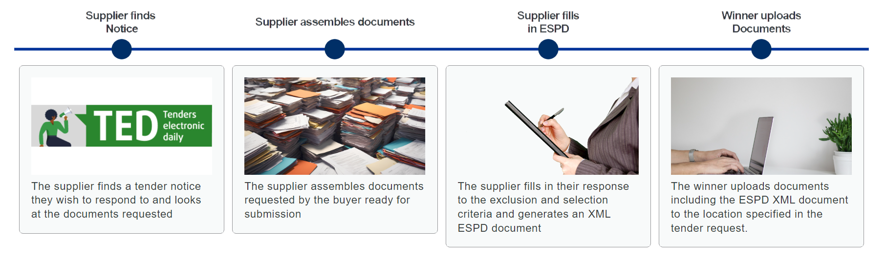
The Economic Operator retrieves the ESPD Request published alongside the Contract Notice, fills in the ESPD Response on an ESPD service platform, and submits it as part of their tender.
Roles of the Economic Operator
Economic Operators can participate in a procurement procedure in different roles:
-
Sole Tenderer: sole economic operator participating by itself;
-
Group Leader: the leader of a Consortium, Joint Venture or other type of group. The Group Leader is the point of contact with the buyer and speaks on behalf of the group;
-
Group Member (not leader): a group member that supplies a percentage of the contract;
-
Other entity (relied upon): an entity upon which the main contractor, the group, or another subcontractor relies in order to meet the selection criteria;
-
Subcontractor: an entity upon which the main contractor, the group, or another subcontractor does not rely in order to meet the selection criteria, and which is not a group member.
| Each participating party must fill in and sign their own ESPD Response. It is the Group Leader’s responsibility to collect the completed ESPD Response documents from all parties and submit them in the tender. |
What the offering party fills in
Part 1: Procedure information
The Economic Operator identifies the ESPD Request to which it is responding, by providing information about the publication, the identity of the procurer, and the procurement procedure.
Progress tracking: the form shows completed and remaining sections
Part 2: Economic Operator information
The Economic Operator provides information about itself, including whether it is a Micro, Small or Medium-Sized Enterprise, whether it is registered on an official list of approved operators, and whether it participates together with others.
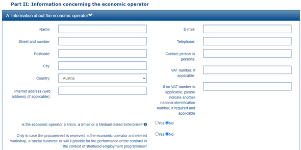
Information about the economic operator
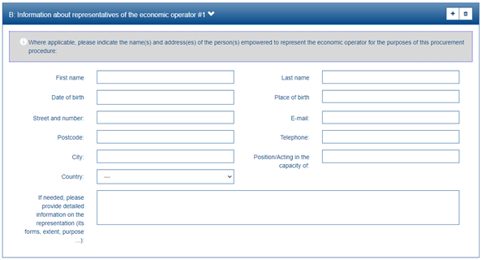
Information about representatives of the economic operator
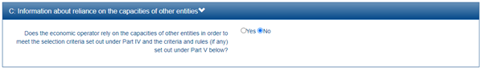
Information about reliance on the capacities of other entities
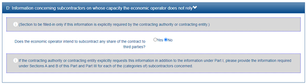
Information concerning subcontractors on whose capacity the EO does not rely
| Part 2 applies only to the ESPD Response document. |
Part 3: Exclusion grounds
The Economic Operator responds to the exclusion grounds defined by the Contracting Authority, declaring whether any grounds apply and providing explanations where relevant.
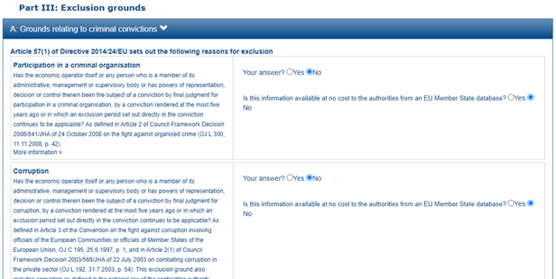
Part 3A: Response to criminal conviction grounds
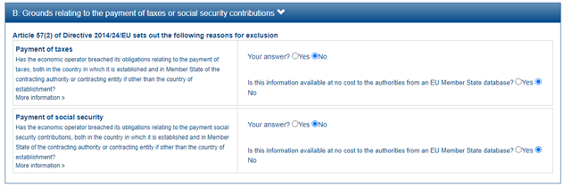
Part 3B: Response to payment of taxes or social security contributions
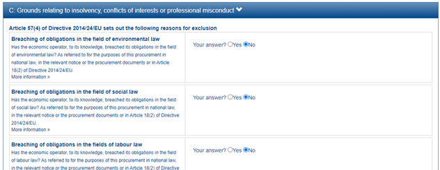
Part 3C: Response to insolvency, conflicts of interests or professional misconduct
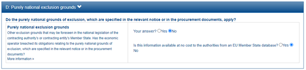
Part 3D: Response to purely national exclusion grounds
Part 4: Selection criteria
The Economic Operator responds to the selection criteria set by the buyer, providing the required information and evidence references.
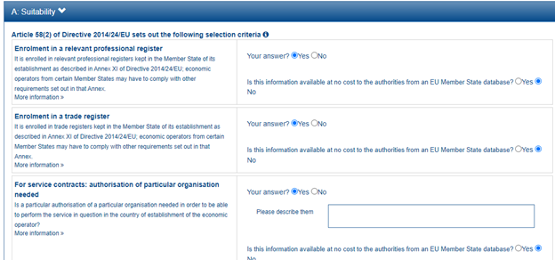
Part 4A: Suitability response
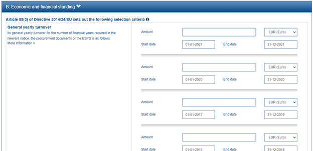
Part 4B: Economic and financial standing response
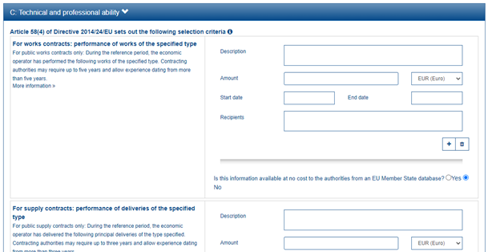
Part 4C: Technical and professional ability response
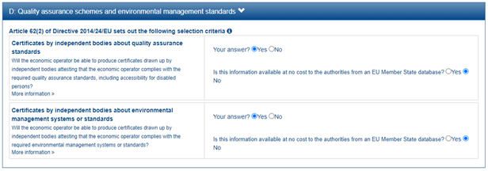
Part 4D: Quality assurance schemes and environmental management standards response
Part 5: Reduction of qualified candidates
The Economic Operator provides information where the buyer has specified objective criteria to limit the number of candidates invited to tender in a two-phased procedure.
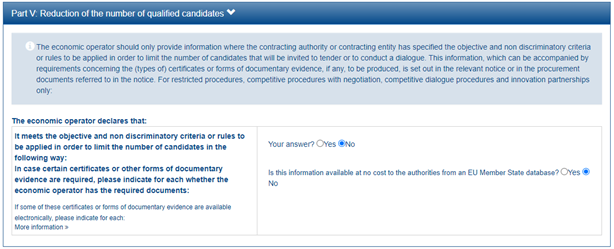
Part 5: Reduction of the number of qualified candidates
| Part 5 does not apply when the Economic Operator is a subcontractor that the lead entity does not rely on in order to meet the selection criteria. |
Completing and downloading
Once the form is filled in, the Economic Operator can review all information provided via the "Overview" option and download the completed ESPD Response:
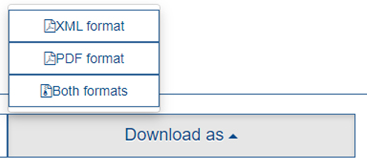
Overview and download of the completed ESPD Response
Lots
Important considerations for Economic Operators regarding lots:
-
Each Economic Operator must submit a separate ESPD Response per lot (or group of lots) they tender for.
-
Different EO parties might have different roles in different lots (e.g. a relied-on entity in some lots, a subcontractor in others).
-
The exclusion grounds apply to all lots; selection criteria may differ per lot.
Reuse of ESPD Responses
It is not necessary to create an ESPD Response from scratch for each procedure. Completed ESPD documents can be downloaded, saved locally, and uploaded in subsequent procedures. Only the information that differs from the previous procedure needs to be changed, making the process more efficient over time.
Further information
-
For details on the ESPD parts and what each role fills in, see ESPD Parts.
-
For technical implementation details, see the ESPD Response technical guide.
-
A list of current ESPD Service providers can be found at the European Commission’s ESPD page.
Any comments on the documentation?